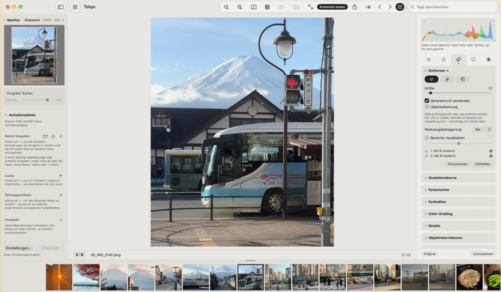

KI DIREKT AUF DEINEM COMPUTER
Jede KI-Funktion läuft auf deinem Computer. Deine Fotos werden nie hochgeladen.

KI-Aussortieren
Fasst Fast-Duplikate und Serien zu Szenen zusammen und wählt jeweils das beste Bild – nach Schärfe, geschlossenen Augen, Ausdruck und ausgefressener Belichtung. Ob daraus Bewertungen werden, entscheidest du.
Automatische Tags
Schlägt pro Foto bis zu 3 Tags aus 22 Alltagskategorien vor. Übernimm per Klick, was passt.
KI-Entfernen
Male über etwas oder klicke auf eine Person oder ein Objekt – die Stelle wird passend aufgefüllt. Ohne generative KI wird klassisch aus der Umgebung ergänzt.
Reparieren, Kopieren und rote Augen
Pinsel für kleine Korrekturen und eine Staubansicht, in der Sensorflecken leicht zu finden sind.
Gesicht und Haut retuschieren
Haut glätten, Ton ausgleichen, Struktur erhalten – und Gesicht, Kinn, Augen, Nase und Lippen formen. Jedes Gesicht lässt sich ausnehmen.
Hautunreinheiten im ganzen Shooting
Findet dieselbe Person in den ausgewählten Fotos und entfernt Unreinheiten in allen. Ein Widerruf macht den ganzen Durchgang rückgängig.
RAW-Editor ohne Import
Kostenlos laden und 30 Tage lang alle Funktionen gratis testen. Erfordert macOS 26 oder neuer. Windows 10 (64 Bit) oder neuer.